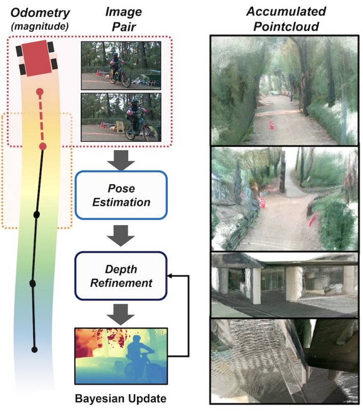

I am a Research Scientist at Creative AI Lab, Sony Group Corporation in Tokyo, Japan.
I received my Ph.D. from the Lab for Autonomous Robotics Research (LARR) at Seoul National University, advised by Prof. H. Jin Kim.
Previously, I was a Research Intern with the Seed Vision at ByteDance USA.
My research focuses on multimodal generative AI and robotics, including video-to-audio generation, text-to-3D generation, multimodal human motion generation, depth estimation, and reinforcement learning.
A multimodal hierarchical network (MMHNet) that enables scalable video-to-audio generation, achieving long-form synthesis by training on short instances and generalizing to extended durations.

PR Depth: Pose-Refined Monocular Depth Estimation with Temporal Consistency
Leezy Han,
Seunggyu Kim,
Dongseok Shim,
Hyeonbeom Lee CVPR, 2026
arxiv
A consistency-aware monocular depth estimation framework that leverages wheel odometry and optical flow to produce temporally stable and accurate depth predictions.
A unified and efficient dense layer that approximates fully connected feedforward layers with linear-time complexity, enabling scalable and resource-efficient neural networks.
A reinforcement learning framework that learns 3D-aware representations from single-view RGB via masked ViT and NeRF, enabling viewpoint-robust robot manipulation without multi-view supervision.
A light-conditioned multi-view diffusion model, improves text-to-3D generation by disentangling lighting-dependent and invariant components for enhanced relighting and geometry.
A latent diffusion-based framework that removes domain-specific components and preserves structural consistency for domain-adaptive monocular depth estimation.
A depth estimation framework that learns domain-invariant geometric representations by disentangling domain-specific components with Gram matrix representations.
A first diffusion-based framework for monocular 3D human pose estimation that generates diverse 3D pose hypotheses from a single 2D keypoint input with GCN.
A frequency-separated, normalizing flow (NF)-based super-resolution framework that generates diverse and high-quality outputs by modeling high-frequency details.
A self-supervised learning approach for monocular depth estimation that leverages gradient-based representations and momentum contrastive loss to capture geometric information.
Honors and Awards
2025
Best Ph.D. Dissertation Award (Honorable Mention), Graduate School of Artificial Intelligence, Seoul National University
2022
Runner-up at NTIRE 2022 Challenge on Learning the Super-resolution Space
{kind=link}